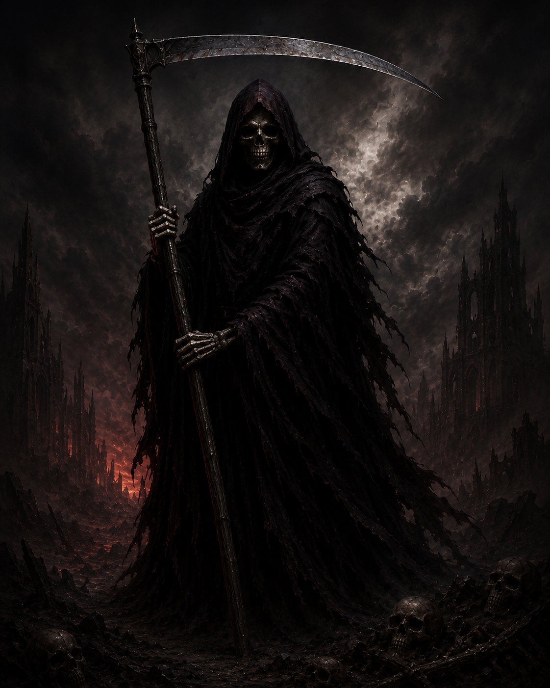

Muerte
La Sombra eterna que gobierna el final de todos los ciclos. Su presencia fría u mortal para los seres débiles como las plantas o los insectos. Si su guadaña te toca estás condenado en el acto a morir y tu alma se guarda en su guadaña.
Poder absoluto